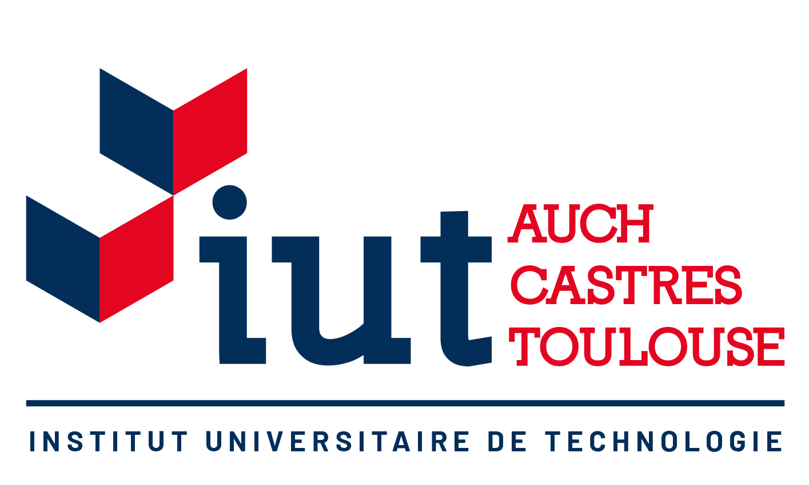

L’université Toulouse-III-Paul-Sabatier, (nom d’usage : Université Paul-Sabatier ; abréviation : UPS ou UT3)
est une université française, située à Toulouse.
Elle a été constituée en 1969, à la suite de la loi Faure, par le regroupement des facultés
de sciences et les facultés médicales de l'ancienne université de Toulouse, elle-même fondée
en 12295. Elle fait partie de la ComUE expérimentale « Université de Toulouse » en tant que membre fondateur6,7.
Spécialisée dans les sciences, les technologies, les disciplines de la santé et les sports,
c'est la plus grande université de Toulouse avec 30 321 étudiants, à la rentrée 2021.
L'université Toulouse-III a été classée 1re parmi les meilleures universités françaises pour
trouver un emploi. Cette étude a été publiée le 18 décembre 2013 par le ministère de l'Enseignement
supérieur et de la Recherche, et interprétée par le journal Le Monde8.
À la fin des années 1950, Émile Durand, le doyen de la faculté des sciences de Toulouse, lance l’idée de la création d’un campus à l’américaine,
pour héberger la faculté des sciences ; à la même époque, il est décidé de créer à Toulouse un institut national des sciences appliquées (INSA) rattaché à la faculté
des sciences. L’INSA de Toulouse est ouvert en 1963 dans le quartier de Rangueil10. Dans les années qui suivent, de nombreux enseignements de la faculté des sciences
sont transférés des locaux des allées Jules-Guesde vers les nouvelles installations, grands amphithéâtres, nombreuses salles de cours. Il devient aussi possible
de créer des bureaux pour les enseignants et des laboratoires de recherche.
En même temps que le campus de la faculté des sciences, se constitue ce que l’on nomme le complexe scientifique de Rangueil-Lespinet,
dans lequel s’installent des écoles comme l’école nationale supérieure de l'aéronautique et de l'espace (SupAéro) ou l'école nationale
de l'aviation civile (ENAC), mais aussi des laboratoires de recherche, comme le LAAS, le CESR, ainsi que le centre spatial du CNES11.
Les travaux débutent en février 196712, et le centre spatial de Toulouse accueille son premier personnel à la fin du mois de septembre
196813. Cette période est marquée par une forte croissance du nombre d'étudiants, et de nombreux logements sont donc construits pour les héberger,
notamment des cités universitaires gérées par le CROUS, comme celles de Rangueil et de Ponsan. Trois restaurants universitaires voient aussi le jour.
Pour plus d'informations, consultez la page Wikipedia sur le
Les instituts universitaires de technologie ont été créés en 1966 en application de la première tranche du plan Fouchet1,2. C'est cette année-là qu'est ouvert l'institut universitaire de technologie de Toulouse 'A', à Toulouse-Rangueil, avec les départements de génie civil et de génie mécanique et productique (GMP)3. Mais par anticipation à cette ouverture, une première promotion de DUT GMP a commencé ses études en 1965 au lycée technique aéronautique de Toulouse, au lycée Déodat-de-Séverac et à l'INSA Toulouse. En 1967, ces 40 premiers étudiants sortent diplômés4. Par ailleurs, trois autres départements de génie électrique et informatique industrielle (GE2I), informatique et information-communication sont créés cette même année, suivis en 1968 des départements génie chimique et gestion des entreprises et administrations (GEA). En 1969, ce dernier intègre l'université Toulouse-III-Paul-Sabatier. Une antenne est créée à Rodez avec le département administration des collectivités publiques et des entreprises5. L'année suivante, une antenne est créée à Tarbes avec un département GEA. À Toulouse-Rangueil, deux autres départements sont implantés : mesures physiques (MP) et techniques de commercialisation (TC)6. En 1974, un 2e IUT est créé à Toulouse à l'université Toulouse II-Le Mirail sous le nom d'IUT Toulouse 'B'7. Il déménagera dans ses locaux de Blagnac et de Figeac en 1995 avant de se diviser en deux instituts distincts en 2001 : IUT de Blagnac et IUT de Figeac8.

> La formation personnelle : activités sportives en initiation, perfectionnement, et compétition. Activités ouvertes aux étudiants et personnel de l'université uniquement ;
> La formation validante (option EPS) avec des enseignements intégrés dans les cursus universitaires
> La formation qualifiante par la délivrance de diplômes d'encadrement en partenariat avec différentes fédérations ;
> L’accueil des Sportifs de Haut Niveau (SHN) et de Bon Niveau National (BNN), afin de concilier leur double projet, pratique sportive de haut niveau et études supérieure.